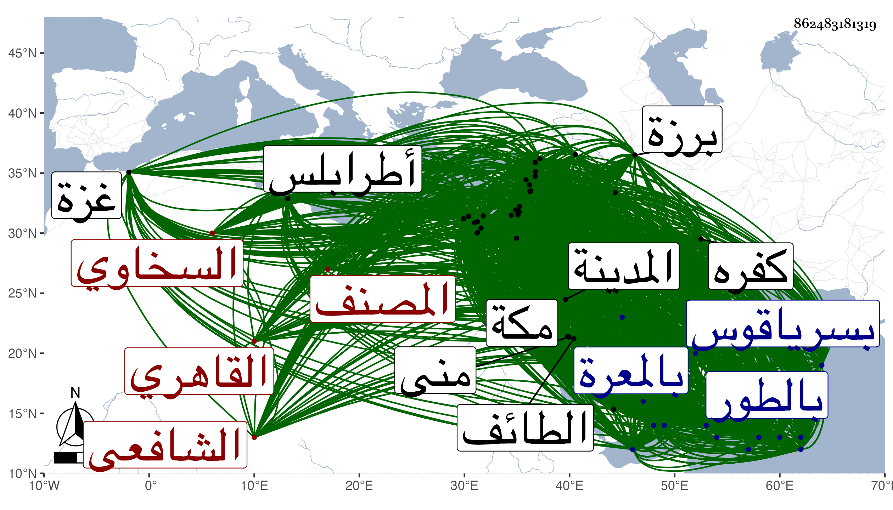

0902Sakhawi.DawLamic.ITO20230111-ara1.EIS1600.862483181319
Biography ID: 862483181319
1
محمد بن عبد الرحمن بن محمد بن أبي بكر بن عثمان بن محمد الملقب شمس الدين أبو الخير وأبو عبد الله بن الزين أو الجلال أبي الفضل وأبي محمد السخاوي الأصل القاهري الشافعي المصنف الماضي أبوه وجده ويعرف بالسخاوي ، وربما يقال له ابن البارد شهرة لجده بين أناس مخصوصين ولذا لم يشتهر بها أبوه بين الجمهور ولا هو بل يكرهها كابن عليبة وابن الملقن في الكراهة ولا يذكره بها إلا من يحتقره . لد في ربيع الأول سنة إحدى وثلاثين وثمانمائة بحارة بهاء الدين علو الدرب المجاور لمدرسة شيخ الإسلام البلقيني محل أبيه وجده ، ثم تحول منه حين دخل في الرابعة مع أبويه لملك اشتراه أبوه مجاور لسكن شيخه ابن حجر ، وأدخله أبوه المكتب بالقرب من الميدان عند المؤدب الشرف عيسى ابن أحمد المقسي الناسخ فأقام عنده يسيرا جدا ، ثم نقله لزوج أخته الفقيه الصالح البدر حسين بن أحمد الأزهري أحد أصحاب العارف بالله يوسف الصفي فقرأ عنده القرآن وصلى به للناس التراويح في رمضان بزاوية لأبي أمه الشيخ شمس الدين العدوي المالكي ، ثم توجه به أبوه لفقيهه المجاور لسكنه الشيخ المفيد النفاع القدوة الشمس محمد بن أحمد النحريري الضرير مؤدب البرهان بن خضر والجلال بن الملقن وابن أسد وغيرهم من الأئمة وأحد من علق شيخه في تذكرته من نوادره وسمع منه الطلبة والفضلاء ويعرف بالسعودي وذلك حين انقطاعه بمنزله لضعفه فجوده عليه وانتفع به في آداب التجويد وغيرها وعلق عنه فوائد ونوادر وقرأ عليه حديثا التحق في قراءته عليه بشيوخه ، وتلاه في غضون ذلك مرارا على مؤدبه بعد زوج عمته الفقيه الشمس محمد بن عمر الطباخ أبوه أحد قراء السبع هو ، وحفظ عنده بعض عمدة الأحكام . ثم انتقل بإشارة السعودي المذكور للعلامة الشهاب بن أسد فأكمل عنده حفظها مع حفظ التنبيه كتاب عمه والمنهاج الأصلي وألفية ابن مالك والنخبة ، وتلا عليه لأبي عمرو ثم لابن كثير وسمع عليه غيرهما من الروايات إفرادا وجمعا وتدرب به في المطالعة والقراءة وصار يشارك غالب من يتردد إليه للتفهم في الفقه والعربة والقراآت وغيرها . وكلما انتهى حفظه لكتاب عرضه على شيوخ عصره فكان من جملة من عرض عليه ممن لم يأخذ عنه بعد : المحب بن نصر الله البغدادي الحنبلي والشمس بن عمار المالكي والنور التلواني والجمال عبد الله الزيتوني وكذا الزين عبادة ظنا فقد اجتمع به وبالشمس البساطي مع جده ، ثم حفظ بعد ألفية العراقي وشرح النخبة وغالب الشاطبية وبعض جامع المختصرات ومقدمة الساوي في العروض وغير ذلك مما لم يكمله . وقرأ بعض القرآن على النور البلبيسي إمام الأزهر والزين عبد الغني الهيثمي لابن كثير ظنا وسمع الكثير من الجمع للسبع وللعشر على الزين رضوان العقبي والبعض من ذلك على الشهاب السكندري وغيره بل سمع الفاتحة وإلى المفلحون للسبع على شيخه بقراءة ابن أسد وجعفر السنهوري وغيرهما من أئمة القراء . ولزم الأستاذ الفريد البرهان بن خضر أحد أصحاب عمه ووالده حتى أملى عليه عدة كراريس من مقدمة في العربية مفيدة وقرأ عليه غالب شرح الألفية لابن عقيل وسمع الكثير من توضيحها لابن هشام وغيره من كتب الفن وغيره ، وكذا قرأ على أوحد النحاة الشهاب أبي العباس الحناوي مقدمته المسماة بالدرة المضية وكتبها له بخطه إكراما لجده ، وتدرب بهما في الإعراب حيث أعرب على الأول من الأعلى إلى الناس وعلى الثاني مواضع من صحيح البخاري ، وأخذ العربية أيضا عن الشهاب الأبدي المغربي والجمال بن هشام الحنبلي حفيد سيبويه وقته الشهير وغيرهما وقرأ التنبيه تقسيما على ابن خضر والسيد البدر النسابة وبعضه على الشمس الشنشي وحضر تقسيمه مرارا عند غير هؤلاء بل حضر عند الشمس الونائي تلك الدروس الطنانة التي أقرأها في الروضة ولم يسمع الفقه عن أفصح منه ولا أجمع . واليسير جدا عند القاياتي وكذا أخذ الكثير من الفقه عن العلم صالح البلقيني ومن جملة ذلك في الروضة والمنهاج وبعض التدريب لوالده والتكملة التي له وسمع دروسا من شرح الحاوي لابن الملقن على شيخه وكذا من التفسير والعروض . وحضر تقسيم البهجة بتمامه عند الشرف المناوي وتقسيم المهذب أو غالبه عند الزين البوتيجي وتردد إليه في الفرائض وغيرها . بل أخذ طرفا من الفرائض والحساب والميقات وغيرها عن الشهاب بن المجدي وقرأ الأصول على الكمال بن إمام الكاملية قرأ عليه غالب شرحه الصغير على البيضاوي وسمع عليه غير ذلك من فقه وغيره وقرأ على غيره في متن البيضاوي . وحضر كثيرا من دروس التقي الشمني في الأصلين والمعاني والبيان والتفسير وعليه قرأ شرحه نظم والده للنخبة مع شرح أبيه لها بل أخذ عن العز عبد السلام البغدادي في العربية والصرف والمنطق وغيرها وكذا أخذ دروسا كثيرة عن الأمين الأقصرائي وكثيرا من التفسير وغيره عن السعد بن الديري ومن شرح ألفية العراقي عن الزين السندبيسي بل قرأ الشرح بتمامه على الزين قاسم الحنفي وأخذ قطعة من القاموس في اللغة تحريرا وإتقانا مع المحب بن الشحنة . وكتب يسيرا على شيخ الكتاب الزين عبد الرحمن بن الصائغ ثم ترك لما رأى عنده من كثرة اللغط ولزم الشمس الطنتدائي الحنفي إمام مجلس البيبرسية فيها أياما . ولبس الخرقة مع التلقين من المحيوي حفيد الجمال يوسف العجمي وأبي محمد مدين الأشمومي وأبي الفتح الفوي وعمر النبتيتي في آخرين في هذه العلوم وغيرها كابن الهمام وأبي القسم النويري والعلاء القلقشندي والجلال المحلي والمحب الأقصرائي ومما حضره عنده التصوف ، واجتمع بأبي عبد الله الغمري وغيره من الأكابر ، وأذن له غير واحد منهم ومن غيرهم بالإفتاء والتدريس والإملاء بل كان الكثير منهم يرسل له بالفتاوى أو يسأله شفاها . وربما أخذ بعضهم عنه . وقبل ذلك كله سمع مع والده ليلا الكثير من الحديث على شيخه إمام الأئمة الشهاب بن حجر فكان أول ما وقف عليه من ذلك في سنة ثمان وثلاثين وأوقع الله في قلبه محبته فلازم مجلسه وعادت عليه بركته في هذا الشأن الذي باد جماله وحاد عن السنن المعتبر عماله فأقبل عليه بكليته إقبالا يزيد على الوصف بحيث تقلل مما عداه لقول الحافظ الخطيب أنه علم لا يعلق إلا بمن قصر نفسه عليه ولم يضم غيره من الفنون إليه ، وقول إمامنا الشافعي لبعض أصحابه أتريد أن تجمع بين الفقه والحديث هيهات ، وتوجيه شيخنا تقديم شيخه له فيه على ولده وغيره بعدم التوغل فيما عداه كتوجيهه لكثير ممن وصف من أئمة المحدثين وحفاظهم وغيرهم باللحن بأن ذلك بالنسبة للخليل وسيبويه ونحوهما دون خلوهم أصلا منه حسبما بسط ذلك معنى وأدلة في عدة من تصانيفه ولذا توهم الغبي الغمر ممن لم يخالطه أنه لا يحسنها وقال العارف المخالط إن من قصره على هذا العلم ظلمه . وداوم الملازمة لشيخه حتى حمل عنه علما جما اختص به كثيرا بحيث كان من أكثر الآخذين عنه ، وأعانه على ذلك قرب منزله منه فكان لا يفوته مما يقرأ عليه إلا النادر إما لكونه حمله أو لأن غيره أهم منه وينفرد عن سائر الجماعة بأشياء . وعلم شدة حرصه على ذلك فكان يرسل خلفه أحيانا بعض خدمه لمنزله يأمره بالمجيء للقراءة . وقرأ عليه الاصطلاح بتمامه وسمع عليه جل كتبه كالألفية وشرحها مرارا وعلوم الحديث لابن الصلاح إلا اليسير من أوائله وأكثر تصانيفه في الرجال وغيرها كالتقريب وثلاثة أرباع أصله ومعظم تعجيل المنفعة واللسان بتمامه ومشتبه النسبة وتخريج الرافعي وتلخيص مسند الفردوس والمقدمة وبذل الماعون ومناقب كل من الشافعي والليث وأماليه الحلبية والدمشقية وغالب فتح الباري وتخريج المصابيح وابن الحاجب الأصلي وبعض إتحاف المهرة وتعليق التعليق ومقدمة الإصابة وجملة ، وفي بعضه ما سمعه أكثر من مرة ، وقرأ بنفسه منها النخبة وشرحها والأربعين المتباينة والخصال المكفرة والقول المسدد وبلوغ المرام والعشرة العشاريات والمائة والملحق بها لشيخه التنوخي والكلام على حديث أم رافع وملخص ما يقال في الصباح والمساء وديوان خطبه وديوان شعره وأشياء يطول إيرادها . وسمع بسؤاله له من لفظه أشياء كالعشرة العشاريات ومسلسلات الإبراهيمي خارجا عما كتبه عنه في الإملاء مع الجماعة من سنة ست وأربعين وإلى أن مات . وأذن له في الإقراء والإفادة والتصنيف وصلى به إماما التراويح في بعض ليالي رمضان . وتدرب به في طريق القوم ومعرفة العالي والنازل والكشف عن التراجم والمتون وسائر الاصطلاح وغير ذلك . وكذا تدرب في الطلبة بمستمليه مفيد القاهرة الزين رضوان العقبي وأكثر من ملازمته قراءة وسماعا وبصاحبه النجم عمر بن فهد الهاشمي وانتفع بإرشاد كل منهم وأجزائه وإفادته ، بل كتب شيخه من أجله إلى دمياط لمن عنده المعجم الصغير للطبراني بإرساله إليه حتى قرأه عليه لكون نسخته قد انمحى الكثير منها وما علم أنه في أوقاف سعيد السعداء إلا بعد ولم ينفك عن ملازمته ولا عدل عنه بملازمة غيره من علماء الفنون خوفا على فقده ولا ارتحل إلى الأماكن النائية ، بل ولا حج إلا بعد وفاته ، لكنه حمل عن شيوخ مصر والواردين إليها كثيرا من دواوين الحديث وأجزائه بقراءته وقراءة غيره في الأوقات التي لا تعارض أوقاته عليه غالبا سيما حين اشتغاله بالقضاء وتوابعه حتى صار أكثر أهل العصر مسموعا وأكثرهم رواية ، ومن محاسن من أخذ عنه من عنده الصلاح بن أبي عمر وابن أميلة وابن النجم وابن الهبل والشمس ابن المحب والفخر بن بشارة وابن الجوخي والمنيجي والزيتاوي والبياني والسوقي والطبقة ، ثم من عنده القاضي العز بن جماعة والتاج السبكي وأخوه البهاء والجمال الأسنائي والشهاب الأذرعي والكرماني والصلاح الصفدي والقيراطي والحراوي ثم الحسين التكريتي والأميوطي والباجي وأبو البقاء السبكي والنشاوري وابن الذهبي وابن العلائي والآمدي والنجم بن الكشك وأبو اليمن بن الكويك وابن الخشاب وابن حاتم والمليجي وابن رزين والبدر بن الصاحب ثم السراج الهندي والبلقيني وابن الملقن والغراقي الهيثمي والأبناسي والبرهان بن فرحون وهكذا حتى سمع من أصحاب أبي الطاهر بن الكويك والعز بن جماعة وابن خير ، ثم من أصحاب الولي العراقي والفوي وابن الجزري ثم من يليهم وقمش وأخذ عمن دب ودرج ، وكتب العالي والنازل حتى بلغت عدة من أخذ عنه بمصر والقاهرة وضواحيها كإنبابة والجيزة وعلو الأهرام والجامع العمري وسرياقوس والخانقاه وبلبيس وسفط الحناء ومنية الرديني وغيرها زيادة على أربعمائة نفس كل ذلك وشيخه يمده بالأجزاء والكتب والفوائد التي لا تنحصر وربما نبهه على عوال لبعض شيوخ العصر ويحضه على قراءتها . وشكا إليه ضيق عطن بعضهم فكاتبه يستعطفه عليه ويرغبه في الجلوس معه ليقرأ ما أحبه . وبعد وفاة شيخه سافر لدمياط فسمع بها من بعض المسندين وكتب عن نفر من المتأدبين ، ثم توجه في البحر لقضاء فريضة الحج وصحب والدته معه فلقي بالطور والينبوع وجدة غير واحد أخذ عنهم ، ووصل لمكة أوائل شعبان فأقام بها إلى أن حج ، وقرأ بها من الكتب الكبار والأجزاء القصار ما لم يتهيأ لغيره من الغرباء حتى قرأ داخل البيت المعظم وبالحجر وعلو غار ثور وجبل حراء وبكثير من المشاهد المأثورة بمكة وظاهرها كالجعرانة ومنى ومسجد الخيف على خلق كأبي الفتح المراغي والبرهان الزمزمي والتقي بن فهد والزين الأميوطي والشهاب الشوائطي وأبي السعادات بن ظهيرة وأبي حامد بن الضياء وزيادة على ثلاثين نفسا فمنهم من يروي عن البهاء بن خليل والكرماني والأذرعي والنشاوري والجمال الأميوطي وابن أبي المجد والتنوخي وابن صديق والعراقي والهيثمي والأبناسي والمجدين اللغوي وإسماعيل الحنفي ومن لا أحصره سوى من أجاز له فيها وهم أضعاف ذلك ، وأعانه عليه صاحبه النجم بن فهد بكتبه وفوائده ونفسه ودلالته على الشيوخ وكذا بكتب والده ثم انفصل عنها وهو متعلق الأمل بها . وقرأ في رجوعه بالمدينة الشريفة تجاه الحجرة النبوية على البدر عبد الله بن فرحون وبغيره من أماكنها على الشهاب أحمد بن النور المحلى وأبي الفرج المراغي في آخرين ثم ينبوع أيضا وعقبة أيلة وقبل ذلك برابغ وخليص . ورجع للقاهرة فأقام بها ملازما السماع والقراءة والتخريج والاستفادة من الشيوخ والأقران غير مشتغل بما يعطله عن مزيد الاستفادة إلى أن توجه لمنوف العليا فسمع بها قليلا وأخذ بفيشا الصغرى عن بعض أهلها ، ثم عاد لوطنه فارتحل إلى الثغر السكندري وأخذ عن جمع من المسندين والشعراء بها وبأم دينار ودسوق وفوة ورشيد والمحلة وسمنود ومنية عساس ومنية نابت والمنصورة وفارسكورود نجيه والطويلة ومسجد الخضر . ودخل دمياط فسمع بها . وحصل في هذه الرحلة أشياء جليلة من الكتب والأجزاء والفوائد عن نحو خمسين نفسا فيهم من يروي عن ابن الشيخة والتنوخي والصلاح الزفتاوي والمطرز وعبد الله بن أبي بكر الدماميني والبلقيني وابن الملقن والعراقي والهيثمي والكمال الدميري والحلاوي والسويداوي والجمال الرشيدي وابي بكر بن إبراهيم ابن العز وابن صديق وابن أقبرس وناصر الدين بن الفرات والنجم البالسي والتاج ابن موسى السكندري والزين الفيشي المرجاني وناصر الدين بن الموفق وابن الخراط والهزبر والشرف بن الكويك . ثم ارتحل إلى حلب وسمع في توجهه إليها بسرياقوس والخانقاه وبلبيس وقطيا وغزة والمجدل والرملة وبيت المقدس والخليل ونابلس ودمشق وصالحيتها والزبداني وبعلبك وحمص وحماة وسرمين وحلب وجبرين ثم بالمعرة وطرابلس وبرزة وكفر بطنا والمزة وداريا وصالحية مصر والخطارة وغيرها شيئا كثيرا من قريب مائة نفس وفيهم من أصحاب الصلاح بن أبي عمر وابن أميلة وابن الهبل والزين عبد الرحمن بن الأستاذ وأبي عبد الله محمد بن عمر بن قاضي شهبة ويحيى بن يوسف الرحبي والحافظ أبي بكر بن المحب وناصر الدين بن داود وأبي الهول الجزري وأبي العباس أحمد بن العماد بن العز المقدسي وابن عوض والشهاب المرداوي وأبي الفرج بن ناظر الصاحبة والكمال بن النخاس ومحمد بن الرشيد عبد الرحمن بن أبي عمر والشرف أبي بكر الحراني والشهاب أبي العباس بن المرحل وفرج الشرفي فمن بعدهم واستمد في بيت المقدس من أجزاء التقي أبي بكر القلقشندي وكتبه وإرشاده فقد كان ذا أنسة بالفن وفي الشام من أجزاء الضيائية وغيرها بمعاونة الإمام التقي بن قندس والبرهان القادري وآخرين ، ثم في حلب بمحدثها وابن حافظها أبي ذر الحلبي فأعاره وأرشده وطاف معه على من بقي عندهم وساعده غيره بتجهيز ساع بإحضار سنن الدارقطني من دمشق حتى أخذها عن بعض من يرويها بحلب . وأجاز له خلق باستدعائه واستدعاء غيره من جهات شتى ممن لم يتيسر له لقيهم أو لقيهم ولكن لم يسمع منهم بل كان وهو صغير قبل أن يتميز ألهم الله سبحانه بفضله بعض أهل الحديث استجازة جماعة من محاسن الشيوخ له تبعا لأبيه فيهم من يروى عن الميدومي وابن الخباز والخلاطي وابن القيم وابن الملوك والعز محمد ابن إسماعيل الحموي وأبي الحرم القلانسي وابن نباتة وناصر الدين الفارقي والكمال ابن حبيب والظهير بن العجمي والتقي السبكي والصلاح العلائي وابن رافع ومغلطاي والنشائي وابن هشام وأبي عبد الله بن جابر ورفيقه أبي جعفر الرعيني المعروفين بالأعمى والبصير وشبههم ، بل من يروى بالسماع عمن حدث عنه بالإجازة كالزيتاوي وابن أميلة والصلاح بن أبي عمر والعماد محمد بن موسى الشيرجي والعز محمد بن أبي بكر السوقي وأبي عبد الله البياني والشهاب بن النجم وأبي علي بن الهبل وزينب ابنة قاسم وغيرهم ، وكذا دخل في استدعاء صاحبه النجم بن فهد الهاشمي بل وكثير من استدعاءات شيخه الزين رضوان وغيره إما لكونه من أبناء صوفية الخانقاه البيبرسية أو نحو ذلك مما هو أخص من العامة بل تكاد أن تكون خاصة كما ألهم الله المحب بن نصر الله حين عرضه عليه كتابة الإجازة مع كونه إنما كتب له بالهامش وكونه لم يكتب بها لكل من أبيه وعمه مع كتابته لهما نحو ورقة ولهذا كله زاد عدد من أخذ عنه من الأعلى والدون والمساوي حتى الشعراء ونحوهم على ألف ومائتين ، والأماكن التي تحمل فيها من البلاد والقرى على الثمانين . واجتمع له من المرويات بالسماع والقراءة ما يفوق الوصف وهي تتنوع أنواعا أحدها ما رتب على الأبواب الفقهية ونحوها وهي كثيرة جدا منها ما تقيد فيه بالصحيح كالصحيحين للبخاري ولمسلم ولابن خزيمة ولم يوجد بتمامه ولأبي عوانة الإسفرايني وهو وإن كان مستخرجا على ثاني الصحيحين فقد أتى فيه بزيادات طرق بل وأحاديث كثيرة . وعنده من المستخرجات بالسماع المستخرج على صحيح مسلم لأبي نعيم كما أن في مروياته لكن بالإجازة من الكتب التي تقيد فيها بالصحة كتاب المستدرك على الصحيحين أو أحدهما للحاكم وهو كثير التساهل بحيث أدرج في كتابه هذا الضعيف بل والموضوع المنافيين لموضوع كتابه ، ومن الكتب الصحيحة الموطأ لمالك ووقع له بالسماع عن دون عشرة من أصحابه وإدراجه في الصحاح إنما هو بالنسبة للتصانيف قبله وإلا فلا يتمشى الأمر في جميعه على ما استقر الأمر عليه في تعريف الصحيح . ومنها ما لم يتقيد فيه بالصحة بل اشتمل على الصحيح وغيره كالسنن لأبي داود رواية أبي على اللؤلؤي وأبي بكر بن داسة عنه وقيل إنه يكفي المجتهد ولأبي عبد الرحمن النسائي رواية ابن السني وابن الأحمر وغيرهما عنه ولأبي عبد الله بن ماجه القزويني ولأبي الحسن الدارقطني ولأبي بكر البيهقي والسنن التي له أجمع كتاب سمعه في معناه ولمحمد بن الصباح وكالجامع لأبي عيسى الترمذي ولأبي محمد الدارمي ويقال له أيضا المسند بحيث اغتر بعضهم بتسميته وأدرجه في النوع بعده وقد أطلق بعضهم عليه الصحة ، وكان بعض الحفاظ ممن روى عن بعض الآخذين عنه يقول إنه لو جعل بدل ابن ماجه بحيث يكون سادسا للكتب الشهيرة أصول الإسلام لكان أولى وكالمسند للإمام الشافعي وليس هو من جمعه وإنما التقطه بعض النيسابوريين من الأم له والسنن له رواية المزني ورواية ابن عبد الحكم وشرح معاني الآثار لأبي جعفر الطحاوي ، ثم أن في بعض هذه ما يميز فيه مصنفه المقبول من غيره كالجامع للترمذي ونحوه السنن لأبي داود ، ومما يلتحق بهذا النوع ما يقتصر فيه على فرد من أفراده أو غيره كالشمائل النبوية للترمذي ودلائل النبوة للبيهقي والشفا لعياض والمغازي لموسى بن عقبة والسيرة النبوية لابن هشام ولابن سيد الناس وبشرى اللبيب له وفضل الصلاة على النبي صلى الله عليه وسلم لإسماعيل القاضي ولابن أبي عاصم ولابن فارس وللنميري وحياة الأنبياء في قبورهم وفضائل الأوقات والأدب المفرد ثلاثتها للبيهقي ، وكذا للبخاري الأدب المفرد وفي معناهما مكارم الأخلاق للطبراني وكذا للخرائطي مع مساويها له ، وكالتوكل وذم الغيبة والشكر والصمت والفرح واليقين وغيرها من تصانيف أبي بكر بن أبي الدنيا وكبر الوالدين والقراءة خلف الإمام ورفع اليدين في الصلاة ثانيها للبخاري والبسملة لأبي عمر بن عبد البر والعلم للمرهبي ولأبي خيثمة زهير بن حرب والطهارة وفضائل القرآن والأموال ثلاثتها لأبي عبيد والإيمان لابن مندة ولأبي بكر بن أبي شيبة وذم الكلام للهروي والأشربة الصغير والبيوع والورع ثلاثتها لأحمد وكالجامع لأخلاق الراوي وآداب السامع للخطيب والمحدث الفاصل بين الراوي والواعي للرامهرمزي وعلوم الحديث لابن الصلاح ومن قبله للحاكم وشرف أصحاب الحديث ورواية الآباء عن الأبناء واقتضاء العلم العمل والزهد والطفيليين خمستها للخطيب . وفي مسموعاته أيضا الزهد لابن المبارك وكالدعوات للمحاملي وللطبراني وهو أجمع كتاب فيها وعمل اليوم والليلة لابن السني وفضل عشر ذي الحجة للطبراني ولأبي إسحق الغازي ، وكذا في مسموعاته من التصانيف في فضل رجب وشعبان ورمضان جملة واختلاف الحديث والرسالة كلاهما للشافعي وعوارف المعارف للسهروردي وبداية الهداية للغزالي وصفة التصوف لابن طاهر . ثانيها ما رتب على المسانيد كمسند أحمد وهو أجمع مسند سمعه وأبي داود الطيالسي وأبي محمد عبد بن حميد وأبي عبد الله العدني وأبي بكر الحميدي ومسدد وأبي يعلى الموصلي . وليس في واحد منها ما هو مرتب على حروف المعجم نعم مما رتب فيه على الحروف من المسانيد مع تقييده بالمحتج به المختارة للضياء المقدسي ولكن لم يكمل تصنيفا ولا استوفى الموجود سماعا والمعجم الكبير للطبراني وهو مع كونه يلي مسند أحمد في الكبر أكثرها فوائد والمعجم لابن قانع والأحاديث فيه قليلة ونحوه الاستيعاب لابن عبد البر إذ ليس القصد فيه إلا تراجم الصحابة وأخبارهم وقريب منه في كون موضوعه التراجم ولكن لم يقتصر فيه على الصحابة مع الاستكثار فيه من الحديث ونحوه حلية الأولياء لأبي نعيم وكذا مما يذكر فيه أحوال الصوفية الأعلام الرسالة القشيرية ، وقد يقتصر على صحابي واحد كمسند عمر للنجاد وسعد للدورقي ، كما أنه قد يقتصر على الفضائل خاصة كفضائل الصحابة لطراد ووكيع . ونحوه الذرية الطاهرية للدولابي وقد يكون في مطلق التراجم لكن لأهل بلد مخصوص كأصبهان لأبي نعيم وبغداد للخطيب وعنده بالسماع منهما جملة وقد يكون في فضائل البلدان كفتوح مصر لابن عبد الحكم وفضائل الشام للربعي ، ثالثها ما هو على الأوامر والنواهي وهو صحيح أبي حاتم بن حبان المسمى بالتقاسيم والأنواع والكشف منه عسر على من لم يتقن مراده ، رابعها ما هو على الحروف في أول كلمات الأحاديث وهو مسند الشهاب للقضاعي ، خامسها ما هو في الأحاديث الطوال خاصة وهو الطوالات للطبراني ولابن عساكر منها كتاب الأربعين ، سادسها ما يقتصر فيه على أربعين حديثا فقط ويتنوع أنواعا كالأربعين الآلهية لابن المفضل وكالأربعين المسلسلات له وكالأربعين في التصوف لأبي عبد الرحمن السلمي إلى غيرها كالأحكام وقضاء الحوائج وما لا تقيد فيه كأربعي الآجري والحاكم وهي شيء كثير ، وقد لا يقتصر على الأربعين كالثمانين للآجري والمائة لغيره ، سابعها ما هو على الشيوخ للمصنف كالمعجم الأوسط والصغير كلاهما للطبراني ومعجم الإسماعيلي وابن جميع ونحوها كالمشيخات التي منها مشيخة ابن شاذان الكبرى والصغرى ومشيخة الفسوي وبعضها مرتب على حروف المعجم ومنه ما لم يرتب ونحو هذا جمع ما عند الحافظ أبي بكر بن المقري وكذا الحارثي وغيرهما مما هو مسموع عنده مما عندهم من حديث الإمام أبي حنيفة وترتيبه على شيوخه ويسمى كل واحد منهما مسند أبي حنيفة ، ثامنها ما هو على الرواة عن إمام كبير ممن يجمع حديثه كالرواة عن مالك للخطيب وممن روى عن مالك من شيوخه لابن مخلد ، تاسعها ما يقتصر فيه على الأفراد والغرائب كالأفراد لابن شاهين وللدارقطني وهي في مائة جزء سمع منها الكثير ومنه الغرائب عن مالك وغيره من المكثرين . عاشرها ما لا تقيد فيه بشيء مما ذكر بل يشتمل على أحاديث نثرية من العوالي وغيرها وهو على قسمين : أولهما ما كل تخريج منه في مجلد ونحوه كالثقفيات والجعديات والحنائيات والخلعيات والسمعونيات والغيلانيات القطيعيات والمحامليات والمخلصيات وقوائد تمام وفوائد سمويه وجملة ونحوها المجالسة للدينوري وما هو دون ذلك كجزء أبي الجهم والأنصاري وابن عرفة وسفيان وما يزيد على ألف جزء . حادي عشرها ما لا إسناد فيه بل اقتصر فيه على المتون مع الحكم عليها وبيان جملة من أحكامها كالأذكار والتبيان والرياض وغيرها من تصانيف النووي وغيره ، إلى غيرها من المسموعات التي لا تقيد فيها بالحديث كالشاطبية والرائية في علمي القراءة والرسم والألفية في علمي النحو والصرف وجمع الجوامع في الأصلين والتصوف والتنبيه والمنهاج وبهجة الحاوي في الفقه وتلخيص المفتاح في المعاني والبيان وقصيدة بانت سعاد والبردة والهمزية وليس ما ذكر بآخر التنبيه كما أنه ليس المراد بما ذكر في الأنواع الحصر إذا لو سرد كل نوع منه لطال ذكره وعسر الآن حصره بل لو سرد مسموعه ومقروءه على شيخه فقط لكان شيئا عجبا . وأعلى ما عنده من المروي ما بينه وبين الرسول صلى الله عليه وسلم بالسند المتماسك فيه عشرة أنفس وليس ما عنده من ذلك بالكثير . وأكثر منه وأصح ما بين شيوخه وبين النبي صلى الله عليه وسلم فيه العدد المذكور . واتصلت له الكتب الستة وكذا حديث كل من الشافعي وأحمد والدارمي وعبد بثمانية وسائط بل وفي بعض الكتب الستة كأبي داود من طريق ابن داسة وأبواب من النسائي ما هو بسبعة بتقديم المهملة واتصل له حديث مالك وأبي حنيفة بتسعة بتقديم المثناة . ولما ولد له ولده أحمد جدد العزم لأجله حيث قرأ له على بقايا المسندين شيئا كثيرا جدا في أسرع وقت وانتفع بذلك الخاص والعام والكبير والصغير وانتشرت الأسانيد المحررة والأسمعة الصحيحة والمرويات المعتبرة وتنبه الناس لإحياء هذه السنة بعد أن كادت تنقطع فلزموه أشد ملازمة وصار من يأنف الاستفادة منه من المهملين يتسور على خطه فيستفيد منه وما يدري أن الاعتماد على الصحف فقط في ذلك فيه خلل كبير ولعمري إن المرء لا ينبل حتى يأخذ عمن فوقه ومثله ودونه على أن الأساطين من علماء المذاهب ومحققيهم من الشيوخ وأماثل الأقران البعيد غرضهم عن المقاصد الفاسدة غير متوقفين عن مسئلته فيما يعرض لهم من الحديث ومتعلقاته مرة بالكتابة التي ضبطها بخطوطهم عنده ومرة باللفظ ومرة بأرسال السائل لهم نفسه وبغير هذا مما يستهجن إيراد مثله مع كونه أفرد أسماءهم في محل آخر ، وطالما كان التقي الشمني يحض أماثل جماعته كالنجمي بن حجي على ملازمته ويقول متى يسمح الزمان بقراءته بل حضه على عقد مجلس الإملاء غير مرة ولذا لما صارت مجالس الحديث آنسة عامرة منضبطة ورأى إقبالهم على هذا الشأن ولله الحمد امتثل إشارته بالإملاء فأملى بمنزله يسيرا ثم تحول لسعيد السعداء وغيرها متقيدا بالحوادث والأوقات حتى أكمل تسعة وخمسين مجلسا . ثم توجه هو وعياله وأكبر إخوته ووالداه للحج في سنة سبعين فحجوا وجاوروا وحدث هناك بأشياء من تصانيفه وغيرها وأقرأ ألفية الحديث تقسيما وغالب شرحها لناظمها والنخبة وشرحها وأملى مجالس . كل ذلك بالمسجد الحرام ، وتوجه لزيارة ابن عباس رضي الله عنهما بالطائف رفيقا لصاحبه النجم بن فهد فسمع منه هناك بعض الأجزاء ، ولما رجع إلى القاهرة شرع في إملاء تكملة تخريج شيخه للأذكار إلى أن تم ، ثم أملى تخريج أربعي النووي ثم غيرها مما يقيد فيه بحيث بلغت مجالس الإملاء ستمائة مجلس فأكثر ، وممن حضر إملاءه ممن شهد إملاء شيخه : النجم بن فهد والشمس الأمشاطي والجمال بن السابق . وممن حضر إملاء شيخه والولي العراقي : البهاء العلقمي ، وممن حضر إملاءهما والزين العراقي : الشهاب الحجازي والجلال القمصي والشهاب الشاوي . وكذا حج في سنة خمس وثمانين وجاور سنة ست ثم سنة سبع وأقام منها ثلاثة أشهر بالمدينة النبوية . ثم في سنة اثنتين وتسعين وجاور سنة ثلاث ثم سنة أربع . ثم في سنة ست وتسعين وجاور إلى أثناء سنة ثمان فتوجه إلى المدينة النبوية فأقام بها أشهرا وصام رمضان بها ، ثم عاد في شوالها إلى مكة وهو الآن في جمادى الثانية من التي تليها بها ختم له بخير . وحمل الناس من أهلهما والقادمين عليهما عنه الكثير جدا رواية ودراية ، وحصلوا من تصانيفه جملة وسئل في الإملاء هناك فما وافق نعم أملى بالمدينة النبوية شيئا لأناس مخصوصين . ثم لما عاد للقاهرة من المجاورة التي قبل هذا تزايد انجماعه عن الناس وامتنع من الإملاء لمزاحمة من لا يحسن فيها وعدم التمييز من جل الناس أو كلهم بين العلمين وراسل من لامه على ترك الإملاء بما نصه : إنه ترك ذلك عند العلم بإغفال الناس لهذا الشأن بحيث استوى عندهم ما يشتمل على مقدمات التصحيح وغيره من جمع الطرق التي يتبين بها انتفاء الشذوذ والعلة أو وجودهما مع ما يورد بالسند مجردا عن ذلك وكذا ما يكون متصلا بالسماع مع غيره وكذا العالي والنازل والتقيد بكتاب ونحوه مع ما لا تقيد فيه إلى غيرها مما ينافي القصد بالإملاء وينادي الذاكر له العامل به على الخالي منه بالجهل . كما أنه التزم ترك الإفتاء مع الإلحاح عليه فيه حين تزاحم الصغار على ذلك واستوى الماء والخشبة سيما وإنما يعمل بالأغراض ، بل صار يكتب على الاستدعاآت وفي عرض الأبناء من هو في عداد من يلتمس له ذلك حين التقيد بالمراتب والأعمال بالنيات ، وقد سبقه للاعتذار بنحو ذلك شيخ شيوخه الزين العراقي وكفى به قدوة ، بل وأفحش من إغفالهم النظر في هذا وأشد في الجهالة إيراد بعض الأحاديث الباطلة على وجه الاستدلال وإبرازها حتى في التصانيف والأجوبة ، كل ذلك مع ملازمة الناس له في منزله للقراءة دراية ورواية في تصانيفه وغيرها بحيث ختم عليه ما يفوق الوصف من ذلك ، وأخذ عنه من الخلائق من لا يحصى كثرة أفردهم بالجمع بحيث أخذ عنه قاضي المالكية بطيبة الشمس السخاوي بن القصبي ومدحه بغير قصيد ثم ولده قاضي المالكية أيضا الخيري أبي الخير أيضا ثم ولده المحبي محمد أو حد النجباء الفضلاء ثم بنوه فكانوا أربعة في سلسلة كما اتفق لشيخنا حسبما أوردته في الجواهر ، وقد قال الواقدي في أحمد بن محمد بن الضحاك بن عثمان بن الضحاك بن عثمان بن عبد الله بن خلة ابن حرام إنه خامس خمسة جالستهم وجالسوا على طلب العلم يعني فيهم من شيوخه ومن طلبته . وشرع في التصنيف والتخريج قبل الخمسين وهلم جرا فكان مما خرجه من المشيخات لكل من الرشيدي وسماه العقد الثمين في مشيخة خطيب المسلمين والعقبي وسماها الفتح القربي في مشيخة الشهاب العقبي والتقي الشمني في كبرى وصغرى . ومن الأربعينيات لكل من زوجة شيخه والكمال بن الهمام والأمين الأقصرائي والتقي القلقشندي المقدسي والبدر بن شيخه والشرف المناوي والمحبين ابن الأشقر وابن الشحنة والزين بن مزهر . وللعلم البلقيني مائة حديث عن مائة شيخ ، وأحاديث مسلسلات ، وللأقصرائي وابن يعقوب والمحبين القمني والفاقوسي وأخيه والعلم البلقيني والمناوي والشمس القرافي وابنة الهوريني وهاجر القدسية والفخر الأسيوطي والملتوتي والحسام بن حريز وابن إمام الكاملية والعبادي وزكريا وابن مزهر فهرستا وكذا الحفيد سيدي يوسف العجمي ولتغري بردى القادري وللشمس الأمشاطي معجما وكذا لابن السيد عفيف الدين بسؤال الكثير منهم في ذلك وتوسلهم بما يقتضي الموافقة ولنفسه الأحاديث المتباينة المتون والأسانيد بشروط كثيرة لم يسبق لمجموعها بلغت أحاديثها نحو الستين وهي في مجلد كبير استفتحه بمن سبقه لذلك من الأئمة والحفاظ ، والأحاديث البلدانيات في مجلد ترجم فيه الأماكن مع ترتيبها على حروف المعجم مخرجا في كل مكان حديثا أو شعرا أو حكاية عن واحد من أهلها أو الواردين عليها مستفتحة بمن سبقه أيضا لذلك وإن لم ير من تقدمه لمجموع ما جمعه فيها أيضا والأحاديث المسلسلات وهي مائة استفتحها أيضا بمن سبقه لجمع المسلسلات مع انفراده بما اجتمع فيها وسماها الجواهر المكللة في الأخبار المسلسلة ، وتراجم من أخذ عنه على حروف المعجم في ثلاث مجلدات سماه بغية الراوي بمن أخذ عنه السخاوي وعزمه انتقاءه واختصاره لنقص الهمم ، وفهرست مروياته وهو إن بيض يكون في أزيد من ثلاثة أسفار ضخمة شرع في اختصاره وتلخيصه بحيث يكون على الثلث منه لنقص الهمم أيضا ، وعشاريات الشيوخ مع ما وقع له من العشاريات في عدة كراريس ، والرحلة السكندرية وتراجمها ، وكذا الرحلة الحلبية مع تراجمها أيضا والرحلة المكية ، والثبت المصري في ثلاث مجلدات ، والتذكرة في مجلدات وتخريج أربعي النووي في مجلد لطيف ، وتكملة تخريج شيخنا للأذكار ويسمى القول البار ، وتخريج أحاديث العادلين لأبي نعيم وأربعي الصوفية للسلمي والغنية المنسوبة للشيخ عبد القادر وتسمى البغية كتب منه اليسير وتخريج طرق إن الله لا يقبض العلم انتزاعا عمله تجربة للخاطر في يوم وإن سبق لجمعه فيما لم يقف عليه ، والتحفة المنيفة فيما وقع له من حديث الإمام أبي حنيفة والأمالي المطلقة . ومما صنفه في علوم هذا الشأن : فتح المغيث بشرح ألفية الحديث وهو مع اختصاره في مجلد ضخم وسبك المتن فيه على وجه بديع لا يعلم في هذا الفن أجمع منه ولا أكثر تحقيقا لمن تدبره . وتوضيح لها حاذى به المتن بدون إفصاح في المسودة ، والغاية في شرح منظومة ابن الجزري الهداية في مجلد لطيف والإيضاح في شرح نظم العراقي للاقتراح في مجلد لطيف أيضا ، والنكت على الألفية وشرحها بيض منه نحو ربعه في مجلد وشرح التقريب للنووي في مجلد متقن ، بلوغ الأمل بتلخيص كتاب الدارقطني في العلل كتب منه الربع مع زوائد مفيدة ، تكملة تلخيص شيخنا للمتفق والمفترق . ومنه في الشروح : تكملة شرح الترمذي للعراقي كتب منه أكثر من مجلدين في عدة أوراق من المتن ، وحاشية في أماكن من شرح البخاري لشيخه وغيره من تصانيفه ، وشرح الشمائل النبوية للترمذي ويسمى أقرب الوسائل كتب منه نحو مجلد ، والقول المفيد في إيضاح شرح العمدة لابن دقيق العيد كتب منه اليسير من أوله ، شرح ألفية السيرة للعراقي في المسودة ثم عدم ، والجمع بين شرحي الألفية لابن المصنف وابن عقيل وتوضيحها كتب منه اليسير . ومنه في التاريخ التعريف به وتشعب مقاصده وسببه بل اسمه الإعلان بالتوبيخ لمن ذم التوريخ ، والتبر المسبوك في الذيل على تاريخ المقريزي السلوك يشتمل على الحوادث والوفيات من سنة خمس وأربعين وإلى الآن في نحو أربعة أسفار ، والضوء اللامع لأهل القرن التاسع وهو هذا الكتاب يكون ست مجلدات والذيل على قضاة مصر لشيخه في مجلد ويسمى الذيل المتناه ، والذيل على طبقات القراء لابن الجزري في مجلد ، والذيل على دول الإسلام للذهبي نافع جدا ، والوفيات في القرنين الثامن والتاسع على السنين يكتب في مجلدات واسمه الشافي من الألم في وفيات الأمم ، ومعجم من أخذ عنه وإن كان هو بعض أفراد هذا الكتاب ، والتحصيل والبيان في قصة السيد سلمان ، والمنهل العذب الروي في ترجمة قطب الأولياء النووي ، والاهتمام بترجمة النحوي الجمال بن هشام ، والقول المبين في ترجمة القاضي عضد الدين . والجواهر والدرر في ترجمة شيخه شيخ الإسلام ابن حجر في مجلد ضخم وربما في مجلدين ، والاهتمام بترجمة الكمال بن الهمام . وترجمة نفسه إجابة لمن سأله فيها . وكذا أفرد من أثنى عليه من الشيوخ والأقران فمن دونهم وما علمه مما صدر عنه من السجع . وتاريخ المدنيين في نحو مجلدين في المسودة . والتاريخ المحيط وهو في نحو ثلثمائة رزمة على حروف المعجم لا يعلم من سبقه إليه . وتجريد حواشي شيخه على الطبقات الوسطى لابن السبكي . وتقفيص قطعة من طبقات الحنفية كان وقع الشروع فيه لسائل ، وطبقات المالكية في أربعة أسفار تقريبا بيض منه المجلد الأول في ترجمة الإمام والآخذين عنه . وترتيب طبقات المالكية لابن فرحون . وتجريد ما في المدارك للقاضي عياض مما لم يذكره ابن فرحون إجابة لسائل فيه وفي الذي قبله . تقفيص ما اشتمل عليه الشفا من الرجال ونحوهم . والقول المنبي في ترجمة ابن عربي في مجلد حافل ، ومحصله في كراسة اسمها الكفاية في طريق الهداية نافعة جدا تجريد أسماء الآخذين عن ابن عربي ، وأحسن المساعي في إيضاح حوادث البقاعي والفرجة بكائنة الكاملية التي ليس فيها للمعارض حجة ، ودفع التلبيس ورفع التنجيس عن الذيل الطاهر النفيس ، وتلخيص تاريخ اليمن وكذا طبقات القراء لابن الجزري ، ومنتقى تاريخ مكة للفاسي ، عمدة الأصحاب في معرفة الألقاب ترتيب شيوخ الطبراني ترتيب شيوخ أبي اليمن الكندي ، ترتيب شيوخ جماعة من شيوخ الشيوخ ونحوهم ومنه في ختم كل من الصحيحين وأبي داود والترمذي والنسائي وابن ماجه والبيهقي والشفا وسيرة ابن هشام وسيرة ابن سيد الناس والتذكرة للقرطبي ، واسم الأول عمدة القاري والسامع في ختم الصحيح الجامع والثاني غنية المحتاج في ختم صحيح مسلم ابن الحجاج ، والثالث بذل المجهود في ختم السنن لأبي داود والرابع اللفظ النافع في ختم كتاب الترمذي الجامع ، والخامس القول المعتبر في ختم النسائي رواية ابن الأحمر ، بل له فيه مصنف آخر حافل سماه بغية الراغب المتمنى في ختم سنن النسائي رواية ابن السني والسادس عجالة الضرورة والحاجه عند ختم السنن لابن ماجه والسابع القول المرتقي في ختم دلائل النبوة للبيهقي ، والثامن الانتهاض في ختم الشفا لعياض ، بل له مصنف آخر حافل اسمه الرياض ، والتاسع الإلمام في ختم السيرة النبوية لابن هشام ، والعاشر رفع الإلباس في ختم سيرة ابن سيد الناس ، والحادي عشر الجوهرة المزهرة في ختم التذكرة . ومنه في أبواب ومسائل : القول البديع في الصلاة على الحبيب الشفيع صلى الله عليه وسلم الفوائد الجلية في الأسماء النبوية لم يبيض . الصلاة على النبي صلى الله عليه وسلم بعد موته . موالي النبي صلى الله عليه وسلم . المقاصد الحسنة في بيان كثير من الأحاديث المشتهرة على الألسنة . الابتهاج بأذكار المسافر الحاج ، القول النافع في بيان المساجد والجوامع وربما سمى تحريك الغني الواجد لبناء الجوامع والمساجد ، الاحتفال بجمع أولى الظلال . الإيضاح والتبيين في مسئلة التلقين ، إرتياح الأكباد بأرباح فقد الأولاد . قرة العين بالثواب الحاصل للميت وللأبوين ، البستان في مسئلة الاختتان ، القول التام في فضل الرمي بالسهام ، استجلاب ارتقاء الغرف بحب أقرباء الرسول صلى الله عليه وسلم وذوي الشرف ، عمدة الناس أو الإيناس بمناقب العباس ، الفخر العلوي في المولد النبوي ، عمدة المحتج في حكم الشطرنج ، التماس السعد في الوفاء بالوعد الأصل الأصيل في تحريم النقل من التوراة والإنجيل القول المألوف في الرد على منكر المعروف ، الأحاديث الصالحة في المصافحة ، القول الأتم في الاسم الأعظم ، السر المكتوم في الفرق بين المالين المحمود والمذموم ، القول المعهود فيما على أهل الذمة من العهود الكلام على حديث الخاتم ، الكلام على قص الظفر ، الكلام على الميزان . القناعة مما تحسن الإحاطة به من أشراط الساعة ، تحرير المقال في الكلام على حديث كل أمر ذي بال ، القول المتين في تحسين الظن بالمخلوقين ، الكلام على قول لا تكن حلويا فتسترط .الكلام على قول كل الصيد في جوف الفرا . الكلام على حديث إن الله يكره الحبر السمين . الكلام على حديث المنبت لا أرضا قطع ولا ظهرا أبقى . الكلام على حديث تنزل الرحمات على البيت المعظم . الإيضاح المرشد من الغي في الكلام على حديث حبب من دنياكم إلي . المستجاب دعاؤهم . تجديد الذكر في سجود الشكر . نظم اللآل في حديث الأبدال . انتقاد مدعي الاجتهاد . الأسئلة الدمياطية . الاتعاظ بالجواب عن مسائل بعض الوعاظ . تحرير الجواب عن مسئلة ضرب الدواب . الامتنان بالحرس من دفع الافتتان بالفرس . المقاصد المباركة في إيضاح الفرق الهالكة بل استقر اسمه رفع القلق والأرق بجمع المبتدعين من الفرق . بذل الهمة في أحاديث الرحمة ، السير القوي في الطب النبوي شرع فيه . رفع الشكوك في مفاخر الملوك . الإيثار بنبذة من حقوق الجار ، الكنز المدخر في فتاوي شيخه ابن حجر قفص منه الكثير . الرأي المصيب في المرور على الترغيب كتب منه اليسير ، الحث على تعلم النحو الأجوبة العلية عن المسائل النثرية تكون في مجلدين ، الاحتفال بالأجوبة عن مائة سؤال ، التوجه للرب بدعوات الكرب ، ما في البخاري من الأذكار ، الإرشاد والموعظة لزاعم رؤية النبي صلى الله عليه وسلم بعد موته في اليقظة . ومنه جامع الأمهات والمسانيد إجابة لسائل فيه كتب منه مجلدا ولو تم لكان في مائة مجلد فأزيد . جمع الكتب الستة بتميز أسانيدها وألفاظها كتب منه أيضا مجلدا فأكثر . ترتيب كل من فوائد تمام والحنائيات والخلعيات وكل من مسند الحميدي والطيالسي والعدني وأبي يعلى على المسانيد . تطريف مشيخة الزين المراغي وعدة أجزاء على المسانيد أيضا . وكذا ترتيب الغيلانيات وفوائد تمام على الأبواب كتب منه قطعة قبل العلم بسبق الهيثمي له ، تجريد ما وقع في كتب الرجال سيما المختصة بالضعفاء من الأحاديث وترتيبها على المسانيد كتب منه جملة . وقرض أشياء من تصانيفه غير واحد من أئمة المذاهب : فمن الشافعية شيخه والعلاء القلقشندي والجلال المحلى والعلم البلقيني والبدر حفيد أخيه الجلال البلقيني والشرف المناوي والعبادي والتقي الحصني والبدر بن القطان وعمه . وأئمة الأدب منهم الشهب الحجازي وابن صالح وابن حبطة . ومن الحنفية العيني وابن الديري والشمني والأقصرائي والكافياجي والزين قاسم وأبو الوقت المرشدي المكي ومن المالكية البدر بن التنسي قاضي مصر وابن المخلطة قاضي اسكندرية والحسام بن حريز قاضي مصر أيضا ومن الحنابلة العز الكناني ، وأفرد مجموع ذلك ونحوه في تأليف كما سلف اجتمع فيه منهم نحو المائتين أجلهم شيخه فقرض له على غير واحد من تصانيفه وكان من دعواته له قوله : والله المسئول أن يعينه على الوصول إلى الحصول حتى يتعجب السابق من اللاحق ، وأثنى خطا ولفظا بما أثبته في التأليف المشار إليه ، وضبط عنه غير واحد من أصحابه تقديمه على سائر جماعته بحيث قال أحد الأفراد من جماعته الزين قاسم الحنفي ما نصه : وقد كان هذا المصنف يعني المترجم بالرتبة المنيفة في حياة حافظ العصر وأستاذ الزمان حتى شافهني بأنه أنبه طلبتي الآن ، وقال أيضا : حتى كان ينوه بذكره ويعرف بعلي فخره ويرجحه على سائر جماعته المنسوبين إلى الحديث وصناعته كما سمعته منه وأثبته بخطي قبل عنه ، وقال صهره وأحد جماعته البدر بن القطان عنه إنه أشار حين سئل من أمثل الجماعة الملازمين لكم في هذه الصناعة بصريح لفظه إليه قال ما معناه إنه مع صغر سنه وقرب أخذه فاق من تقدم عليه بجده واجتهاده وتحريه انتقاده بحيث رجوت له وانشرح لذلك الصدر أن يكون هو القائم بأعباء هذا الأمر ، وكذا نقل عنه توسمه فيه لذلك قديما الزين السندبيسي . ومنهم الحافظ محدث الحجاز التقي بن فهد الهاشمي حيث وصف بأشياء منها : زين الحفاظ وعمدة الأئمة الأيقاظ شمس الدنيا والدين ممن اعتنى بخدمة حديث سيد المرسلين واشتهر بذلك في العالمين على طريقة أهل الدين والتقوى فبلغ فيه الغاية القصوى . وكان ولده الحافظ النجم عمر لا يقدم عليه أحدا . ومما كتبه الوصف بشيخنا الإمام العلامة الأوحد الحافظ الفهامة المتقن العلم الزاهر والبحر الزاخر عمدة الحفاظ وخاتمتهم من بقاؤه نعمة يجب الاعتراف بقدرها ومنة لا يقام بشكرها وهو حجة لا يسع الخصم لها الجحود وآية تشهد بأنه إمام الوجود وكلامه غير محتاج إلى شهود وهو والله بقية من رأيت من المشايخ وأنا وجميع طلبة الحديث بالبلاد الشامية والبلاد المصرية وسائر بلاد الإسلام عيال عليه ووالله ما أعلم في الوجود له نظير . والحافظ الرحلة الزين قاسم الحنفي ومن بعض كتابته الوصف بالواصل إلى دقائق هذا الفن وجليله والمروي فيه من الصدى جميع غليله :
| تلقف العلم من أفواه مشيخة | نصوا الحديث بلامين ولا كذب |
| فما دفاتره إلا خواطره | يمليك منها بلا ريب ولا نصب |
وهو الذي لم يزل قائما من السنة بأعبائها ناصبا نفسه لنشرها وأدائها محققا لفنونها ومضمون عيونها مع قلة المعين والناصر والمجاري له في هذا العلم والمذاكر لا يفتر عن ذلك طرفة عين ولا يشغل نفسه بغيبة ولامين . والعلامة الموفق أبو ذر بن البرهان الحلبي الحافظ فوصف بمولانا وشيخنا العلامة الحافظ الأوحد قدم علينا حلب فأفاد وأجاد كان الله له بل صرح بما هو أعلى منه . والبرهان البقاعي وكان عجبا في التناقض حين الغضب والرضى فقال : إن ممن ضرب في الحديث بأوفر نصيب وأوفى سهم مصيب المحدث البارع الأوحد المفيد الحافظ الأمجد إلى آخر كلامه . وقال مرة : إذا وافقني فلان لا يضرني من خالفني في ثناء كثير ذكر في التأليف المشار إليه ، وقدم هؤلاء لاشتغالهم بالحديث أكثر . وممن أثنى من الحفاظ المحدثين الزين رضوان المستملي وكذا التقي القلقشندي والعز الحنبلي ومنه الوصف بالإمام العلامة الحافظ الأستاذ الحجة المتقن المحقق شيخ السنة حافظ الأمة إمام العصر أوحد الدهر مفتي المسلمين محيي سنة سيد الأولين أبقاه الله للمعارف علما ولمعالم العلم إماما مقدما وأحيا بحياته الشريفة مآثر شيخه شيخ الإسلام وجعله خلفا عن السلف الأئمة الأعلام ويحرسه من حوادث الزمان وغدره ويأمنه من كيد العدو ومكره برسوله محمد صلى الله عليه وسلم . والمفوه البليغ البرهان الباعوني شيخ أهل الأدب فكان مما قال : الشيخ الإمام الحائز لأنواع الفضل على التمام الحافظ لحديث النبي عليه أفضل الصلاة والسلام أمتع الله بحياته وأعاد على المسلمين من بركاته هو الآن من الأفراد في علم الحديث الذي اشتهر فيه فضله وليس بعد شيخ الإسلام ابن حجر فيه مثله وقد حصل الاجتماع بخدمته والفوز ببركته والاقتباس من فوائده والاستمتاع بفرائده . وقاضي القضاة العلم البلقيني فمن وصفه قوله : الشيخ الفاضل العلامة الحافظ جمع فأوعى واهتم بهذا الفن ولم يزل له يرعى ، وصرح غير مرة بالانفراد . وقريبه الولوي قاضي الشام فكان مما كتبه في أثناء مدح لغيره من أقربائه خصوصا واسطة عقدها من انعقد الإجماع على أنه أمسى كالجوهر الفرد وأصبح في وجه الدهر كالغرة حتى صارت الدرر مع جواهره كالذرة بل جواد جوده شهد له جريانه بالسبق في ميدان الفرسان وحكم له بأنه هو الفرع الذي فاق أصله البديع بالمعاني ولا حاجة للبيان أضاء هذا الشمس فاختفت منه كواكب الذراري كيف لا وقد جاءه الفيض بفتح الباري فهو نخبة القمر والدهر وعين القلادة في طبقة الجود لأنه عين السخاء وزيادة فبدايته لها النهاية ومنهاجه أوضح الطرق إلى الغاية وهو الخادم للسنة الشريفة والحاوي لمحاسن الاصطلاح النكت المنيفة فبهجته زهت بروضتها وروضته زهت ببهجتها إلى آخر كلامه . وقريبه الآخر البدري قاضي مصر كان فكان مما كتبه في أثناء كلام : وكيف لا وإمامة مؤلفه في فنون الحديث النبوي لا تنكر وتقدمه فيه ليس بشاذ ولا منكر بل هو باستفاضته أشهر من أن يقال ويذكر وحفظه للرجال وطبقاتهم ومراتبهم سما فيه على أهل عصره وتصانيفه إليها النهاية في الشهادة له بمزيد علوه وفخره واستحضاره للأسانيد والمتون من أمهات الكتب لا يدرك قرار بحره ومعرفته بمظان ما يلتمس منه في جميع فنونه وإبراز المخدرات من مخبآت عيونه يقصر عن بيان الأمر فيه المقال ولا يحصر ذلك المثال فقد حاز قصب السبق في مضماره وميز صعاب القشر من لبابه بجودة قريحته وبنات أفكاره بحيث صار هو الكعبة والحجة في زمانه وشهد له الحفاظ بالتقدم على الشيوخ فضلا عن أقرانه . وفقيه المذهب الشرف المناوي ، ومما كتبه أنه لما أشرف علم الحديث على الإندراس من التدريس حتى لم يبق منه إلا الأثر والانفصال من التأليف حتى لم يبق منه إلا الخبر انتدب لذلك الأخ في الله تعالى الإمام العالم العلامة والحافظ الناسك الألمعي الفهامة الحجة في السنن على أهل زمانه والمشمر في ذلك عن ساعد الاجتهاد في سره وإعلانه فجد بجد في حفظ السنة حتى هجر الوسن وهاجر بعزم فيها حتى طلق الوطن وأروى العطاش من عذب بحر السنة حتى ضرب الناس بعطن . وحافظ المذهب السراج العبادي فقال هو الذي انعقد على تفرده بالحديث النبوي الإجماع وأنه في كثرة اطلاعه وتحقيقه لفنونه بلغ ما لا يستطاع ودونت تصانيفه واشتهرت وثبتت سيادته في هذا الفن النفيس وتقررت ولم يخالف أحد من العقلاء في جلالته ووفور ثقته وديانته وأمانته بل صرحوا بأجمعهم بأنه هو المرجوع إليه في التعديل والتجريح والتحسين والتصحيح بعد شيخه شيخ مشايخ الإسلام ابن حجر حامل راية العلوم والأثر تغمده الله بالرحمة والرضوان وأسكنه فسيح الجنان والله أسأل وله الفضل والمنة أن يحفظ ببقائه هذه السنة ويزيده علوا ورفعة وسموا ويتم عليه بمزيد الأفضال والنعم ويبقيه لإرشاد المبتدعين فهداية رجل واحد خير من حمر النعم وينفع ببركته ومحبته آمين . والعلامة فريد الأدباء الشهاب الحجازي فكان مما قاله : الإمام العلامة حافظ عصره ومسند شامه ومصره هو بحر طاب موردا وسيد صار لطالبي اتصال متون الحديث على الحالين سندا بل هو لعمري عين في الأثر وما رآه أحد ممن سمع به إلا قال قد وافق الخبر الخبر لقد أجاد النقل من كلامي الله ورسوله القديم والحديث وسارت بفضله الركبان وبالغت بالسير الحثيث فلو رآه صاحب الجامع الصحيح رفع مناره وقدمه للإمامة وقال هذا مسلم على الحقيقة وزاد في تعظيمه وإكرامه ولو أدركه الحافظ الذهبي لم يتكلم معه إلا بالميزان أو البرهان القيراطي لرجح ما قاله وعلم أن بلدته قيراط بالنسبة عند تحرير الأوزان ولو لحقه المزي ولى هربا بعد ما لم أطرافه أو عاينه صاحب الذيل ملأ ردته من هذه الفوائد التي ليس له بها طوق وطلب إسعافه نعم هو المأمول في الشدة والرخا والمليء من الفوائد والسخي بها ولا بدع إذ هو من أهل سخا . والأستاذ شيخ الفنون في وقته التقي الحصني الشافعي فقال إنه أصبح به رباع السنة المصطفوية معمورة الأكناف والعرصات ورياض الملة الحنيفية ممطورة الأكمام والزهرات قد صعد ذرى الحقائق بأقدام الأفكار ونور غياهب الشكوك بأنوار الآثار ، قارع عن الدين فكشف عنه الفوارع والكروب وسارع إلى اليقين فصرف عنه العوادي والخطوب وإذا قرع سمعك ما لم تسمع به في الأولين فلا تسرع وقف وقفة المتأملين وقل للمعاند فائت بمثله إن كنت من الصادقين فالله تعالى يغمره بجزيل بره في سائر أوقاته ويعصمه بالسداد في حركاته وسكناته ويبوئه من الفردوس الأعلى أعلى درجاته بمحمد وآله وأصحابه وأزواجه وذرياته . وأوحد أهل الأدب الشهاب بن صالح فقال في كلام له : هو الحافظ الذي تمكن من الحديث دراية ورواية فاطلع وروى وتضلع وارتوى وأعان نفسه نفسه حيث طال فطاب على غوص ذلك البحر ولنعم المعين وأمده مديده بالجوهر الثمين فحبذا ابن معين جمع ما تفرق من فنون الاصطلاح فحكى ابن الصلاح بل أربى بنخبة الفكر في مصطلح أهل الأثر بل جلى كعبة فضل لو حجها أبو شيخه تهيب النطق حتى قيل ذا حجر فكأني عنيته بقولي في شيخه شيخ الحديث قديما إذ نثرت عليه عقد مدحي نظيما :
| وقد حفظ الله الحديث بحفظه | فلا ضائع إلا شذى منه طيب |
| ومازال يملأ الطرس من بحر صدره | لآليء إذ يملي علينا ونكتب |
جعل الله تعالى مصر به موطنا لهذا العلم حتى تصاهي بغداد دار السلام وأثابه في الأخرى جنة النعيم دار السلام ورفع بها درجاته عدد ما كتب وسيكتب في الصحف المكرمة من الصلاة على الحبيب الشفيع والسلام . والإمام المحب بن القطان فمن قوله : يا له من ندى نديم يجود على السائل بالعلوم التي يبخل بمثلها ابن العديم لو رآه الخطيب أو ابنه لضربا بالسيف منبر تاريخهما إعراضا ولسكنا عن كشف حال الرجال أعراقا وأعراضا جاب بالبلاد وجال واقتحم المهامه ولم يخف إلا وجال وجد في الرحلة آخذا من تقلباتها بالدين المتين ماشيا في جنباتها عندما سمع قوله : فلو لا نفر من كل فرقة منهم طائفة ليتفقهوا في الدين مقبلا تارة بإقباله ومتصلا تارة بجبهة مغرى بجمالها حال اتصاله واطئا بعزمه فروج الثرى راغبا في قول القائل عند الصباح يحمد القوم السرى مستولدا من جنات جنان فوائد الموائد جنينا شاربا من ماء حبات هبات هباته كيما يحيا معينا دخل دمشق الشام دار ابن عامر فأحيا الذاكر بعد أن أمات ذكر ابن عساكر ولما قدم من حلب أغنى باطلاعه عن مطالعة الدر المجتلب فلله دره من حافظ رقي بسعيه وطوافه بزماننا هذا أسنى المراقي وأبان بمرامز إشاراته ما طواه بعد النشر الحافظ ابن العراقي . وقال ابن أخيه البدر عقب دعاء شيخهما بقوله الذي سلف والله المسئول . أن يعينه على الوصول إلى الحصول حتى يتعجب السابق من اللاحق ما نصه : وقد استجاب الله دعوته وحقق رجاءه وبغيته إذ تصانيفه وتعاليقه شاهدة لذلك ومبرهنة لما هنالك فكم من مشكل غامض بينه ومقفل أوضح الأمر فيه وأعلنه ومعلول كشف القناع عن علته وحقق ما لعله خفي عن أهل صنعته وهو الآن كما سبقني إليه الأعيان حافظ الوقت ومحدث الزمان وإن رغمت أنوف بعض الحساد لذلك فضوء شمسه يقتبس منه القاطن والسالك ومن جد وجد ومن قنع واعتزل ففي ازدياد من المعارف لم يزل ومن للتواضع سلك فجدير بأن للقلوب ملك ومن ترفع بالجهل هلك والله أسأل أن يزيده من فضله وأن يديم حياته لإحياء هذا الشأن ونقله . وهؤلاء شافعيون . والعلامة المصنف البدر العيني قال عن بعض التصانيف : إنه حوى فوائد كثيرة وزوائد غزيرة وأبرز مخدرات المعاني بموضحات البيان حتى جعل ما خفي كالعيان فدل على أن منشئه ممن يخوض في بحار العلوم ويستخرج من دررها المنثور والمنظوم ، وممن له يد طولى في بدائع التراكيب وتصرفات بليغة في صنائع التراتيب زاده الله تعالى فضلا يفوق به على أنظاره وتسمو به في سماء قريحته قوة أفكاره إنه على ذلك قدير وبالإجابة جدير . وفقيه المذهب سعد الدين بن الديري فوصف بالشيخ الإمام الفاضل المحدث الحافظ المتقن وقرض بعض التصانيف . والتقى الشمني وآخر ما كتب الوصف بالشيخ الإمام العلامة الثقة الفهامة الحجة مفتي المسلمين إمام المحدثين حافظ العصر شيخ السنة النبوية ومحررها وحامل راية فنونها ومقررها من صار الاعتماد عليه والمرجوع في كشف المعضلات إليه أمتع الله بفوائده وأجراه على جميل عوائده . والأميني الأقصرائي ، ومما كتبه أخيرا قوله له متمثلا :
| إذا قالت حذام فصدقوها | فإن القول ما قالت حذام |
وكيف لا ومؤلفه سيدنا ومولانا الشيخ الإمام العالم العلامة الحبر الفهامة الثقة الحجة المتقن المحجة حافظ الوقت وشيخ السنة ونادرة الوقت الذي حقق الفنون وفنه الشيخي العاملي الشمسي فهو المرجوع إليه والمعتمد والمعول عليه في فنون الحديث بأسرها والقائم بالذب عنها ونشرها بعد شيخه شيخ مشايخ الإسلام خاتمة المجتهدين الأعلام الكناني العسقلاني تغمده الله برحمته وأسكنه فسيح جنته والله أرجو أن يؤيده بمعونته ويكافئه بمثوبته ويكفيه شماتة الأعداء والحاسدين ويمد في حياته لنفع المسلمين . وابن أخته المحبي فوصف بسيدنا ومولانا وأولانا العالم العلامة والبحر الفهامة المحدث البارع الحافظ المتقن الضابط . والمحيوي الكافياجي ومنه الوصف بالإمام الهمام زين الكرام فخر الأنام الصالح الزاهد العارف العالم العلامة النسابة العمدة الرحلة وارث علوم الأنبياء والمرسلين الموصوف بالمعارف القدسية المشهور بالكمالات السنية الأنسية الفرد الفريد الوحيد المشهود له بأنه إمام جليل أحفظ زمانه في المنقول والمعقول بالاتفاق المقدم على الكل بالاستحقاق في جميع البلدان والآفاق أحسن الله تعالى إليه ونفعنا به وببركات علومه والمسلمين آمين آمين ألف آمين يا رب العالمين . والرضى أبو حامد بن الضياء ومما كتبه الوصف بالإمام العالم المفيد الأوحد الفريد قدوة المحدثين وعمدة العلماء العاملين نفع الله به وأعاد من بركته ووصل الخير بسببه . وقال قدم بيت الله المحرم وجاور لدى بيت الله المعظم وتجرد للعبادة مجتهدا وواصل ذلك بالفحص عن رواة الحديث بها مستعدا تكميلا لمراده وتحصيلا لمفاده فأفاد واستفاد واشتغل وأشغل ورام الإحاطة بالتحصيل فحصل . وكلهم حنفيون . والمحيوي الأنصاري المكي فوصف بسيدنا الإمام العالم العلامة المحدث حافظ الوقت بديع الزمان وعلامة علماء هذا الشان أبقاه الله تعالى على ممر الدهور والأزمان . والشمسي القرافي سبط ابن أبي جمرة فقال : الشيخ الإمام المحدث الكامل الحافظ المتقن الباحث في هذا الفن عن حقائقه المبلغ في طلب التصحيح غاية دقائقه أفاض الله علينا من بركاته وعلومه وأدام نعمه عليه في حركاته وسكونه . والبدري بن المخلطة فقال : هو الإمام المنفرد في عصره المجتهد في إقامة الصلاة في مصره فقسما لو رفعت إلى الحاكم قصته لقبل منه القول وأوجب له الجائزة ذات الطول وحكم على من نازعه بالتسليم ومناولة الكتاب باليمين وإنه إن شافه الناس بحديثه فيوثق به ولا يمين ولو تصفحه الذهبي لنقطه بذهبه أو رآه البيهقي لرفعه مع شعبه ولو سمع به القصري لأمر بالوقوف على أبوابه بل بالتوسد بأعتابه هذا وإني وجدت القول ذا سعة غير أن عبارتي قاصرة والفكرة مني مقصورة فاترة . والثلاثة مالكيون . بل سمع منه بعض تصانيفه من شيوخه الزين البوتيجي واستجازه لنفسه وللقاضي الحسام بن حريز وأشار لهذا بقوله : فاستجزته منه لأرويه عنه بسند صحيح وتناولت من يده بقلب منشرح وأمل فسيح ، وكذا سمع منه بعضها إمام الكاملية مع مناولة جميعه مقرونة بالإجازة ، والمحب بن الشحنة واشتد غرامه بها وتكرر سؤاله في بعضها بخطه وبلفظه . وكتب الشرف أبو الفتح المراغي وكان في التحري واليبس والورع بمكان بخطه ما نصه : وكاتبه يسأل سيدي الحافظ أمده الله تعالى وعمره أن يجيز لولد عبده فلان . بل سمع منه جميع القول البديع منها شيخ المذهب الشرف المناوي وأحد أئمة الحنفية البدر بن عبيد الله وصالح الأمراء وأوحدهم يشبك المؤيدي الفقيه وقرأ عليه بعضه وتناول سائره منه التقي الجراعي الدمشقي الحنبلي وحدث به عنه الشهاب بن يونس المغربي والفخر عثمان الديمي والشرف عبد الحق السنباطي وهو بخصوصه ممن سمعه منه ثم قرأه بالروضة الشريفة عند الحجرة النبوية وكذا قرأه قبله فيها النجم بن يعقوب المدني وخير الدين بن القصبي المالكيان وأبو الفتح بن إسمعيل الأزهري الشافعي حسبما أخبره به كل منهم وبالغ الجلال المحلي في الثناء عليه والتنويه به حتى قال له قد عزمت على إشهاره وإظهاره ، وكذا أثنى على غيره من التصانيف وتكرر ثناؤه في الغيبة كما أخبره به الشمس الجوجري والسيد السمهودي وغيرهما واختصر التقي الشمني بعضها وأكثر عالم الحنابلة العز الكناني من مطالعتها والانتقاء منها وربما صرح بذلك في بعضه وقال في بعضها : إن لم تكن التصانيف هكذا وإلا فلا فائدة . وكتب الأكابر بعضها بخطوطهم كالعز السنباطي والشمس بن قمر والبرهان القادري أحد الأولياء والشمس بن العماد والأستاذ عبد المعطي المغربي نزيل مكة والنجم بن قاضي عجلون وقابل معه بعضها والسيد السمهودي وسمع بعضها والبرهان البقاعي ونقل منها في مجاميعه تناقلها الناس إلى كثير من البلدان والقرى ولم يعدم من يأخذ منها المصنف بكماله سلخا ومسخا وينسبه لنفسه من غير عزو بل ومنهم من ينتقد والأعمال بالنيات والله يعلم المفسد من المصلح . ولقب بمشيخة الإسلام المحيوي الكافياجي مشافهة غير مرة والشمسي بن الحمصي عالم غزة مراسلة والزيني زكريا الأنصاري في غير موضع والجمالي بن ظهيرة والبدري السعدي والمحيوي المكي الحنبليان وآخرون من الأئمة الأحياء والأموات . وامتدحه بالنظم خلق أفردهم بالجمع ومنهم ممن مدح شيخه المحبان ابن الشحنة وابن القطان والبرهان الباعوني وغاب الآن نظمه عنه دون نثره والمليجي الخطيب والشهب الحجازي والمنصوري وابن صالح والجديدي والشمسي بن الحمصي والسخاوي قاضي طيبة والقادري وابن أيوب الفوي وأبو اللطف الحصكفي المقدسي وغاب الآن نظمه عنه دون كلامه وعبد اللطيف الطويلي والجمال عبد الله المحلى والزين عبد الغني الأشليمي وعدتهم ستة عشر نفسا بقيد الحياة منهم ثلاثة الآن بل اثنان فالمحب الأول قال وقد قلت فيه قول المحب في الحبيب :
| وقف المحب على الذي | رقم الحبيب فراقه |
| قسما ولم يسمع به | من وصف إلا ساقه |
بل من وصفه له الحافظ الكبير والمحدث الذي ليس له في عصره نظير وأنه ظهر له بالقياس الصحيح من هذه الأوصاف أن إجماع أهل السنة لا يتطرق إليه الخلاف وأن المترجم جدير أن يترجم بطبقات فوق ما ترجم وجدير بالعلم بتقييد المهمل وتبيين المعجم فالله يبقيه لكشف مشكلات الأحاديث الغامضة وبيان معضلات الأسانيد العارضة وإحياء دواوين السنن السنية وإماتة أقوال أهل البدع الفتن والعصبية في كلام طويل . والمحب الثاني قال :
| على السخاوي دون حفظ الذي سما | بوقتي هذا رتبة ابن علي |
| له من لجين الطرس نقد دوينه | مناقشة النقاش والذهبي |
| بدا بسما العرفان شمس معارف | ويوم بيان كالرضى العلوي |
وقال أيضا :
| وغير عجيب من محب بديهة | سخبا بالمعاني في مديح سخاوي |
| روى عطشا بالعلم عند رواية | فأكرم بري من روايته راوي |
وقال أيضا :
| بليغ إذا ما راح يتلو رواية | يشنف آذانا ويشرح خاطرا |
| يقر له عند القراءة خصمه | فأكرم بمولى يبهج الخصم إن قرا |
والمليجي قال من قصيدة :
| أولاك فضلا في حديث نبيه | تبدي جميل الوصف من أنبائه |
| تملى ارتجالا فيه وصف رجاله | وتذيع ما قد شاع من أسمائه |
| يا شمس دين الله حسبك ما تجد | من خير خلق الله عند لقائه |
| فضلا يجيزك وهو أكرم سيد | أغنى الورى بنواله وسخائه |
| والفضل فضلك في الحديث وغيره | عجز المفيد الوصف عن إحصائه |
والحجازي قال من أبيات :
| أعني الإمام العالم العلامه | المسند المحدث الفهامه |
| الحافظ المفوه السخاوي | بعلم كل عالم وراوي |
والمنصوري أثبت في الجمع المشار إليه وابن صالح تقدم مع نثره . والجديدي قال في أبيات :
| وافي جوابك فاستنار ظلام | وغدت بدور الأفق وهي تمام |
| يا كاتبا كبت العدى لما كبت | من خلفه في شوطها الأقلام |
| صلى وراءك في الحديث جماعة | ممن يعانيه وأنت إمام |
| أهدت لنا طرسا سطور بيانه | روض ومغناه البديع حمام |
| وكأنما تلك الحروف جواهر | فيها تأنق جهده النظام |
| لا بل كؤوس مدامة من فوقها | قد در من مسك المدام ختام |
| لا بدع إن مالت بعطفي نشوة | فمن الكلام إذا اعتبرت مدام |
وابن الحمصي قال :
| يا خادما أخبار أشرف مرسل | وسخا فنسبته إليه سخاوي |
| وحوى السياسة والرياسة ناهجا | منهاج حبر للمكارم حاوي |
وقال أيضا :
| أحببتكم من قبل رؤياكم | لحسن وصف عنكم في الورى |
| وهكذا الجنة محبوبة | لأهلها من قبل أن تنظرا |
والسخاوي قال في قصيدة طويلة قيلت بحضرة كل منهما في الروضة النبوية :
| وفي فضائله القول البديع فكم | أبدى بديعا لأرباب الحجا حسنا |
| فكم فوائد فيها للورى جمعت | من دعوة وصلاة أذهبا الحزنا |
| فاسمعه في الروضة الزهرا تنل رشدا | بحضرة المصطفى تظفر بكل منى |
| فكل أقواله كم فرجت كربا | وكم بها خائف من بأسه أمنا |
| جمع الإمام السخاوي الشافعي فلقد | أجاد في جمعه إذ فارق الوسنا |
| العالم الحافظ المحمود سيرته | أضحى بضبط على الأخبار مؤتمنا |
| يقرأ ويقرئ ما يقريه يوضحه | للطالبين فما في العصر عنه غنى |
| يروي الأحاديث والآثار متصلا | عن الأسانيد لا ريبا ولا وهنا |
والقادري وقوله في الجمع المشار إليه ، وابن أيوب وقد غاب الآن عنه نظمه ، والطويلي فقال :
| بهذا العيد قد جئنا نهني | إمام العصر شيخ الناس طرا |
| أطال الله عمرك في ازدياد | من الخيرات للدنيا وأخرى |
والمحلى وقد غاب الآن عنه نظمه والزين الإشليمي فقال :
| يا سيدا أضحى فريد زمانه | ودليل ما قد قلته الإجماع |
| عندي حديث مسند ومسلسل | يرويه ذو الاتقان لا الوضاع |
| ما في الزمان سواك يلفى عالما | صحت بذاك إجازة وسماع |
| الخير فيك تواترت أخباره | وهو الصحيح وليس فيه نزاع |
| يا من إذا ما قد أتاه ممرض | يشكو يزول الضر والأوجاع |
في أبيات . وقد يكون فيما طوى أبدع وأبلغ مما أثبت ولكن إنما اقتصر على هؤلاء لما سبق . وقال له الشمس بن القاياتي مخاطبا له :
| يا حافظا سنة المختار من مضر | وباذلا جهده في خدمة الأثر |
| ومن سما وعلا في كل مكرمة | حتى استكان له من كان ذا بصر |
| إني أقول لمن أضحى يشانئكم | أقصر عن الطعن واسمع قول مختبر |
| قد تنكر العين ضوء الشمس من رمد | وينكر الفم طعم الماء من ضرر |
| مازال ذو الجهل يبغي النقص من حسد | لذي الفضائل إذ فاتته في العمر |
| فاصفح بفضلك عنه واجتهد فلقد | حباك ربك علما صادق الخبر |
واقتفى أثره بعض الآخذين عنهما فقال :
| يا عالما على الحديث قد جذا | وماحيا بحفظه ضرم الجذي |
| وباذلا للسعي فيه جهده | وراكبا لأجله شط الشذى |
| لا ينثني عن حبكم إلا فتى | معاند أو حاسد ومن هذي |
| إني أقول للعداة إنه | لقد سما على العدا مستحوذا |
وقال :
| لعمرك ما بدا نسب المعلى | إلى كرم وفي الدنيا كريم |
| ولكن البلاد إذا اقشعرت | وضوح نبتها رعى الهشيم |
واستقر في تدريس الحديث بدار الحديث الكاملية عقب موت الكمال ولكن تعصب مع أولاده من يحسب أنه يحسن صنعا وكانت كوائن أشير إليها في الفرجة ثم رغب الابن عنها لعبد القادر بن النقيب وكذا استقر في تدريس الحديث بالصرغتمشية عقب الأمين الأقصرائي وناب قبل ذلك في تدريس الحديث بالظاهرية القديمة بتعيينه وسؤاله ، ثم في تدريس الحديث بالبرقوقية عقب موت البهاء المشهدي ، وقرره المقر الزيني بن مزهر في الإملاء بمدرسته التي أنشأها فاستعفى من ذلك لالتزامه تركه كما قدمه وكذا قرره المناوي في تدريس الحديث بالفاضلية لظنه أنه وظيفة فيها ، كما أنه سأل شيخه بعد موت شيخه البرهان بن خضر في تدريس الحديث بالمنكوتمرية فأجابه بأنه لم يكن معه إنما كان معه الفقه وقد أخذه تقي الدين القلقشندي ، بل عينه الأمير يشبك الفقيه الدوادار حين غيبته بمكة لمشيخة الحديث بالمنكوتمرية عقب التقي المذكور فلا زال به صهره حتى أخذها لنفسه وكذا ذكر في غيبته التالية لها لقراءة الحديث بمجلس السلطان بعد إمامه وما كان يفعل لأن الدوادار المشار إليه سأله في المبيت عند الظاهر خشقدم ليلتين في الأسبوع ليقرأ له نخبا من التاريخ كما كان العيني يفعل فبالغ في التنصل كما تنصل منه حين التماس الدوادار يشبك من مهدي له عند نفسه ، ومن مطلق التردد لتمر بغا المستقر بعد في السلطنة وفي الحضور عند برد بك والشهابي بن العيني وغيرهما ، نعم طلبه الظاهر نفسه في مرض موته فقرأ عنده الشفافي ليلة بعض ذلك بحضرته وفي غيبته التي بعدها لمشيخة سعيد السعداء بعد الكوراني ، وعرض عليه الأتابك شفاها قضاء مصر فاعتذر له فسأله في تعيين من يرضاه فقال له لا أنسب من السيوطي قاضيك ، إلى غير هذا مما يرجو به الخير مع أن ماله من الجهات لا يسمن ولا يغني من جوع ، ولله در القائل :
| تقدمتني أناس كان شوطهم | وراء خطوي لو أمشي على مهل |
| هذا جزاء امرئ أقرانه درجوا | من قبله فتمنى فسحة الأجل |
| فإن علاني من دوني فلا عجب | لي أسوة بانحطاط الشمس عن زحل |
| فاصبر لها غير محتال ولا ضجر | في حادث الدهر ما يغني عن الحيل |
| أعدى عدوك من وثقت به | فعاشر الناس واصحبهم على دخل |
| فإنما رجل الدنيا وواحدها | من لا يعول في الدنيا على رجل |
وقال أحمد بن يحيى ثعلب النحوي فيما رويناه عنه يقول دخلت على أحمد بن حنبل فسمعته يقول :
| إذا ما خلوت الدهر يوما فلا تقل | خلوت ولكن قل علي رقيب |
| إذا ما مضى القرن الذي أنت فيهم | وخلفت في قرن فأنت غريب |
| فلا تك مغرورا تعلل بالمنى | فعلك مدعو غدا فتجيب |
| ألم تر أن الدهر أسرع ذاهب | وأن غدا للناظرين قريب |
هذا كله وهو عارف بنفسه معترف بالتقصير في يومه وأمسه خبير بعيوبه التي لا يطلع عليها مستغفر مما لعله يبدو منها ، لكنه أكثر الهذيان طمعا في صفح الإخوان مع كونه في أكثره ناقلا واعتقاد أنه فضل ممن كان له قائلا . والله يسأل أن يجعله كما يظنون وأن يغفر له ما لا يعلمون ، ولله در القائل :
| لئن كان هذا الدمع يجري صبابة | على غير ليلى فهو دمع مضيع |
وقول غيره :
| سهر العيون لغير وجهك باطل | وبكاؤهن لغير فضلك ضائع |
